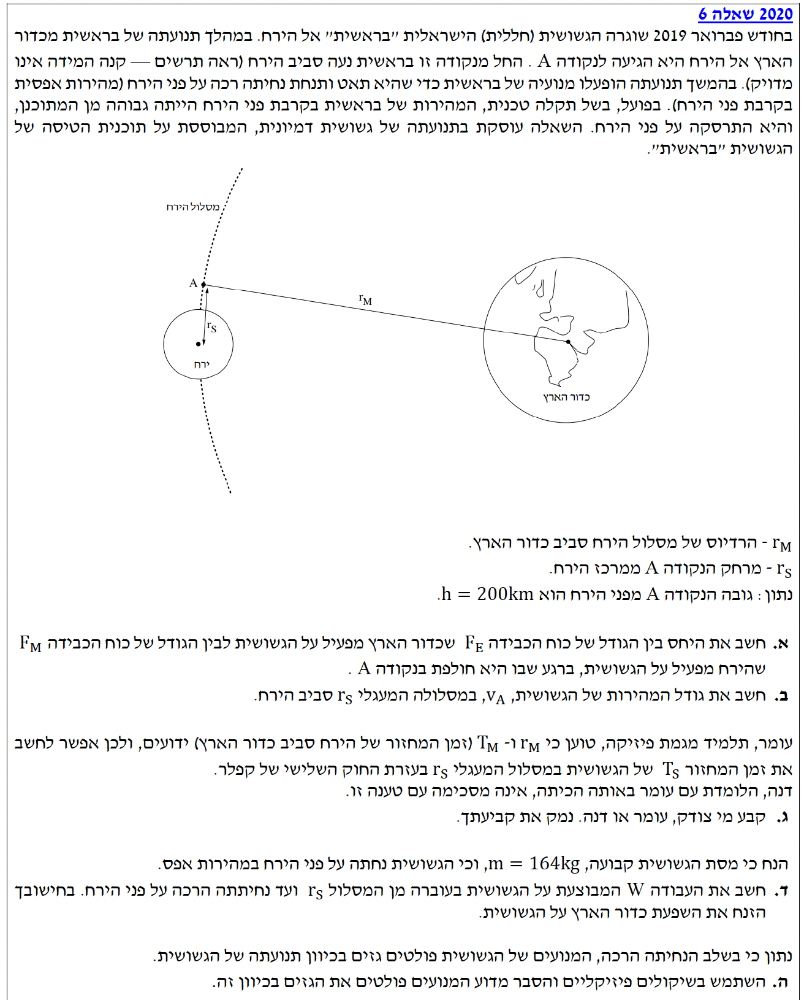

פתרון בגרות בפיזיקה - מכניקה 2020 שאלה 6
מכניקה 5 יח"ל
עודכן:
--- --:--:--

[תמונת השאלה המקורית]
לא נמצאה תמונה בשם question-image.png באותה תיקייה.
מה נתון:
מתוך דף הנוסחאות ונתוני השאלה, נרכז את הנתונים (ונבצע המרת יחידות למערכת MKS - מטר, ק"ג, שנייה):
- גובה החללית מפני הירח: \( h = 200 \text{ km} = 200 \cdot 10^3 \text{ m} = 2 \cdot 10^5 \text{ m} \)
- רדיוס הירח: \( R_M = 1.74 \cdot 10^6 \text{ m} \)
- מסת הירח: \( M_M = 7.35 \cdot 10^{22} \text{ kg} \)
- רדיוס מסלול הירח סביב כדור הארץ: \( r_M = 3.84 \cdot 10^8 \text{ m} \)
- מסת כדור הארץ: \( M_E = 5.974 \cdot 10^{24} \text{ kg} \)
- קבוע הגרביטציה: \( G = 6.67 \cdot 10^{-11} \text{ N}\cdot\text{m}^2/\text{kg}^2 \)
מה מחפשים:
את היחס בין גודל כוח הכבידה שכדור הארץ מפעיל על החללית (\( F_E \)) לבין גודל כוח הכבידה שהירח מפעיל עליה (\( F_M \)) בנקודה A, כלומר את המנה \( \frac{F_E}{F_M} \).
נוסחאות ועקרונות בשימוש:
\( F = G\frac{m_1 m_2}{r^2} \) (חוק הכבידה העולמי של ניוטון)
הצבה ופתרון:
שלב 1: חישוב המרחקים
תחילה, נחשב את מרחקי החללית ממרכזי הגרמיים השמימיים:
מרחק החללית ממרכז הירח (נקודה A):
\[ r_S = R_M + h = 1.74 \cdot 10^6 + 0.2 \cdot 10^6 = 1.94 \cdot 10^6 \text{ m} \]
על פי נתוני השאלה, נקודה A נמצאת בדיוק על מסלול הירח סביב כדור הארץ. לכן, מרחק החללית ממרכז כדור הארץ שווה לרדיוס מסלול הירח:
\[ r_{EA} = r_M = 3.84 \cdot 10^8 \text{ m} \]
שלב 2: הצבה בחוק הכבידה וחישוב היחס
נרשום את הביטויים עבור כל אחד מהכוחות (כאשר \( m \) היא מסת החללית):
\[ F_E = G\frac{M_E \cdot m}{(r_{EA})^2} \]
\[ F_M = G\frac{M_M \cdot m}{(r_S)^2} \]
נחלק את המשוואות כדי למצוא את היחס. נשים לב שקבוע הכבידה \( G \) ומסת החללית \( m \) מצטמצמים:
\[ \frac{F_E}{F_M} = \frac{G \frac{M_E m}{(r_{EA})^2}}{G \frac{M_M m}{(r_S)^2}} = \frac{M_E}{M_M} \cdot \left( \frac{r_S}{r_{EA}} \right)^2 \]
נציב את הערכים המספריים שחישבנו:
\[ \frac{F_E}{F_M} = \frac{5.974 \cdot 10^{24}}{7.35 \cdot 10^{22}} \cdot \left( \frac{1.94 \cdot 10^6}{3.84 \cdot 10^8} \right)^2 \]
\[ \frac{F_E}{F_M} = 81.28 \cdot (0.005052)^2 = 81.28 \cdot 2.552 \cdot 10^{-5} \approx 0.00207 \]
היחס בין כוח הכבידה של כדור הארץ לכוח הכבידה של הירח הוא: \( 2.07 \cdot 10^{-3} \)
טיפ מורה:
תראו איזה יופי! למרות שכדור הארץ מסיבי פי 81 מהירח, החללית קרובה כל כך לירח עד שכוח המשיכה של הירח חזק בערך פי 500 מכוח המשיכה של כדור הארץ באותה נקודה (היחס הוא כ-0.2%). תוצאה זו מצדיקה את ההזנחה של כדור הארץ בחישובים בסעיפים הבאים, שכן החללית נמצאת ב"ספירת ההשפעה" (Sphere of Influence) של הירח.
מה נתון:
בהמשך לסעיף הקודם, אנו מבינים שהכוח הדומיננטי הוא כוח הכבידה של הירח. לכן נזניח את השפעת כדור הארץ.
- רדיוס המסלול המעגלי סביב הירח: \( r_S = 1.94 \cdot 10^6 \text{ m} \)
- מסת הירח: \( M_M = 7.35 \cdot 10^{22} \text{ kg} \)
- החללית מבצעת תנועה מעגלית קצובה.
מה מחפשים:
את גודל המהירות המשיקית של החללית (\( v_A \)) במסלולה המעגלי סביב הירח.
נוסחאות ועקרונות בשימוש:
\( \Sigma F = ma \) (החוק השני של ניוטון)
\( a_R = \frac{v^2}{r} \) (תאוצה רדיאלית / צנטריפטלית)
\( F = G\frac{m_1 m_2}{r^2} \) (חוק הכבידה)
הצבה ופתרון:
נצייר תרשים כוחות (FBD) עבור החללית במסלולה. הכוח היחיד הפועל עליה הוא כוח הכבידה של הירח המכוון למרכז הירח (ציר רדיאלי פנימה).
נרשום את משוואת הכוחות בציר הרדיאלי (כיוון למרכז מוגדר כחיובי):
\[ \Sigma F_R = m \cdot a_R \]
\[ G\frac{M_M \cdot m}{(r_S)^2} = m \cdot \frac{v_A^2}{r_S} \]
מסת החללית \( m \) ואחד מהרדיוסים \( r_S \) מצטמצמים. נבודד את המהירות \( v_A \):
\[ v_A^2 = \frac{G \cdot M_M}{r_S} \implies v_A = \sqrt{\frac{G \cdot M_M}{r_S}} \]
נציב את הנתונים:
\[ v_A = \sqrt{\frac{6.67 \cdot 10^{-11} \cdot 7.35 \cdot 10^{22}}{1.94 \cdot 10^6}} = \sqrt{\frac{4.902 \cdot 10^{12}}{1.94 \cdot 10^6}} = \sqrt{2.527 \cdot 10^6} \approx 1590 \text{ m/s} \]
גודל המהירות של החללית במסלולה סביב הירח הוא: \( 1.59 \cdot 10^3 \text{ m/s} \)
טיפ מורה:
שימו לב שמסת החללית \( m \) הצטמצמה במשוואה. המשמעות היא שכל גוף – בין אם זה בורג קטן, החללית 'בראשית' או תחנת חלל ענקית – אם הם יקיפו את הירח באותו רדיוס מסלול, תהיה להם בדיוק אותה מהירות מסלולית!
מה נתון:
יש לנו שני גופים המבצעים תנועה מעגלית:
- החללית מקיפה את הירח ברדיוס \( r_S \) ובזמן מחזור \( T_S \).
- הירח מקיף את כדור הארץ ברדיוס \( r_M \) ובזמן מחזור \( T_M \).
עומר טוען שניתן להשתמש בחוק השלישי של קפלר ליצירת משוואה בין הנתונים האלו, ודנה לא מסכימה.
מה מחפשים:
להכריע מי צודק (עומר או דנה) ולנמק פיזיקלית את הבחירה.
נוסחאות ועקרונות בשימוש:
\( \frac{T_1^2}{T_2^2} = \frac{r_1^3}{r_2^3} \) (החוק השלישי של קפלר)
או בניסוח חלופי: \( \frac{T^2}{r^3} = \text{const} \)
הצבה ופתרון:
נזכור מאיפה מגיע החוק השלישי של קפלר. אם נציב מהירות זוויתית \( v = \frac{2\pi r}{T} \) במשוואת הכוחות \( G\frac{Mm}{r^2} = m\frac{v^2}{r} \) נקבל:
\[ \frac{T^2}{r^3} = \frac{4\pi^2}{GM} \]
כלומר, הקבוע של חוק קפלר תלוי ישירות ב-\( M \), שהיא המסה של הגוף המרכזי (זה שסביבו מקיפים).
במקרה שלנו, הגופים מקיפים מרכזים שונים לחלוטין!
- עבור החללית המקיפה את הירח, הקבוע הוא \( \frac{4\pi^2}{GM_M} \).
- עבור הירח המקיף את כדור הארץ, הקבוע הוא \( \frac{4\pi^2}{GM_E} \).
מכיוון שהגופים המרכזיים שונים (\( M_E \neq M_M \)), לא ניתן להשוות את היחסים.
דנה צודקת. החוק השלישי של קפלר תקף רק עבור גופים המקיפים את אותו גוף מרכזי.
טיפ מורה:
מלכודת קלאסית! חוק קפלר מיועד להשוואה בין לוויינים של אותו כוכב (למשל: כדור הארץ ומאדים סביב השמש, או שני לווייני תקשורת סביב כדור הארץ). אסור לערבב מסלולים סביב גרמי שמיים שונים!
מה נתון:
- מסת החללית: \( m = 164 \text{ kg} \).
- מצב התחלתי (i): מסלול מעגלי ברדיוס \( r_S = 1.94 \cdot 10^6 \text{ m} \).
- מצב סופי (f): נחיתה רכה על פני הירח, כלומר רדיוס \( R_M = 1.74 \cdot 10^6 \text{ m} \) ומהירות סופית \( v_f = 0 \).
מה מחפשים:
את העבודה \( W \) המבוצעת על החללית מהמסלול ההתחלתי ועד לנחיתה.
נוסחאות ועקרונות בשימוש:
\( W_{nc} = \Delta E = E_f - E_i \) (משפט עבודה-אנרגיה מוכלל)
\( E = -\frac{GMm}{2r} \) (אנרגיה מכנית של גוף במסלול מעגלי)
\( U_G = -\frac{GMm}{r} \), \( E_k = \frac{1}{2}mv^2 \) (אנרגיה פוטנציאלית כובדית ואנרגיה קינטית)
הצבה ופתרון:
נחשב את האנרגיה המכנית הכוללת במצב ההתחלתי (במסלול המעגלי), על ידי הצבת מסת הירח ורדיוס המסלול בנוסחה:
\[ E_i = -\frac{G \cdot M_M \cdot m}{2 \cdot r_S} \]
במצב הסופי (על הקרקע מנוחה), האנרגיה הקינטית היא אפס (\( v_f=0 \)), ולכן האנרגיה הכוללת היא רק האנרגיה הפוטנציאלית במרחק הרדיוס של הירח (\( r = R_M \)):
\[ E_f = E_{k,f} + U_{G,f} = 0 - \frac{G \cdot M_M \cdot m}{R_M} \]
העבודה הדרושה היא השינוי באנרגיה. נציב את הביטויים ונוציא גורם משותף:
\[ W = E_f - E_i = -\frac{G \cdot M_M \cdot m}{R_M} - \left(-\frac{G \cdot M_M \cdot m}{2 \cdot r_S}\right) \]
\[ W = G \cdot M_M \cdot m \cdot \left( \frac{1}{2 \cdot r_S} - \frac{1}{R_M} \right) \]
נחשב את המכפלה הראשונה בנפרד למניעת טעויות:
\[ G \cdot M_M \cdot m = 6.67 \cdot 10^{-11} \cdot 7.35 \cdot 10^{22} \cdot 164 \approx 8.04 \cdot 10^{14} \text{ J}\cdot\text{m} \]
נציב הכל יחד:
\[ W = 8.04 \cdot 10^{14} \cdot \left( \frac{1}{2 \cdot 1.94 \cdot 10^6} - \frac{1}{1.74 \cdot 10^6} \right) \]
\[ W = 8.04 \cdot 10^{14} \cdot (2.577 \cdot 10^{-7} - 5.747 \cdot 10^{-7}) \]
\[ W = 8.04 \cdot 10^{14} \cdot (-3.17 \cdot 10^{-7}) \approx -2.55 \cdot 10^8 \text{ J} \]
העבודה המבוצעת על החללית עד לנחיתה היא: \( -2.55 \cdot 10^8 \text{ J} \)
טיפ מורה:
שימו לב לסימן המינוס! העבודה חייבת לצאת שלילית. למה? החללית חייבת 'לאבד' אנרגיה מכנית כדי לרדת ממסלול גבוה למסלול נמוך (קרקע) וכדי לעצור לחלוטין. מנועי הבלימה מפעילים כוח נגד כיוון התנועה ולכן מבצעים עבודה שלילית. זה מוביל אותנו ישירות לסעיף הבא.
מה נתון:
מנועי החללית פולטים גז בכיוון תנועת החללית (כלומר, קדימה).
מה מחפשים:
הסבר מילולי המבוסס על חוקים פיזיקליים, מדוע זו הדרך לבצע נחיתה רכה.
נוסחאות ועקרונות בשימוש:
החוק השלישי של ניוטון (חוק פעולה ותגובה): כוח הפעולה שווה בגודלו והפוך בכיוונו לכוח התגובה.
הסבר פיזיקלי:
בחלל אין אוויר או קרקע שאפשר להפעיל עליהם כוח חיכוך כדי לבלום. הדרך היחידה לשנות את מצב התנועה היא באמצעות פליטת מסה. ננתח את האירוע בעזרת תרשים FBD כוחות אופקיים:
כדי לבצע נחיתה רכה, גודל המהירות של החללית חייב לקטון. לשם כך נדרשת תאוצה בכיוון מנוגד לכיוון המהירות (כלומר כוח שקול מנוגד לכיוון התנועה).
כאשר החללית פולטת גז קדימה (בכיוון התנועה), המנועים מפעילים כוח על הגז קדימה. לפי החוק השלישי של ניוטון, הגז מפעיל כוח תגובה על החללית השווה בגודלו ומנוגד בכיוונו, כלומר כוח הפועל אחורה (מנוגד לכיוון התנועה).
כוח זה מייצר עבודה שלילית המקטינה את האנרגיה הקינטית של החללית, וכך גודל המהירות שלה קטן והיא יכולה לנחות בבטחה מבלי להתרסק.
פליטת גז בכיוון התנועה יוצרת כוח תגובה על החללית בניגוד לכיוון התנועה (לפי החוק ה-3 של ניוטון). כוח זה גורם לגודל המהירות של החללית לקטון ומאפשר נחיתה רכה.
טיפ מורה:
אפשר להסביר זאת גם דרך חוק שימור התנע של המערכת הסגורה (חללית+גז). התנע ההתחלתי הוא קדימה. אם חלק מהמסה (הגז) מקבל לפתע מהירות גבוהה מאוד קדימה, יתרת המסה (החללית) חייבת לאבד מהירות קדימה כדי שהסכום הכולל (התנע) יישמר. דמיינו שאתם מחליקים על קרח וזורקים כדור כבד קדימה - אתם תדחפו אחורה!